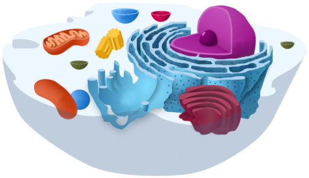
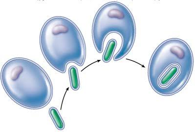
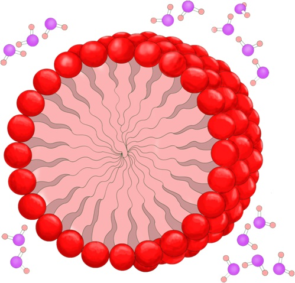
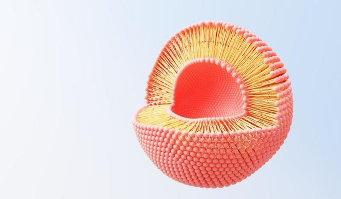
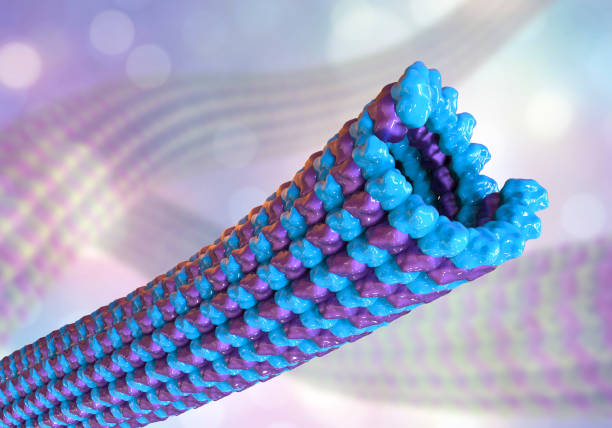

Unidade 2 - A FLUIDEZ DA VIDA
Indentidades

A identidade, dentro do contexto da fluidez da vida, incorpora não apenas aspectos psicológicos e sociais, mas também biológicos. A biologia influencia a identidade através de processos como o desenvolvimento neurológico e hormonal, que afetam tanto as nossas percepções internas quanto as interações externas. Esses elementos biológicos não apenas moldam características físicas, mas também contribuem para a complexidade das emoções, comportamentos e experiências pessoais, interagindo de maneira dinâmica com fatores ambientais e sociais ao longo do tempo. Assim, a identidade humana emerge não apenas como um produto das experiências e relações, mas também como um resultado da interação intricada entre o corpo, a mente e o ambiente.
Molecular da célula
A biologia molecular da célula é um campo fascinante que explora os processos fundamentais que ocorrem dentro das células. Estuda como os componentes moleculares, como DNA, RNA, proteínas e metabolitos, interagem e regulam as funções celulares. Compreender os mecanismos moleculares da célula é essencial para avançar não apenas na biologia básica, mas também na medicina, biotecnologia e outras áreas aplicadas, permitindo desenvolver novos tratamentos, diagnosticar doenças e explorar novas fronteiras na engenharia genética e na biologia sintética.
Teoria da endossimbiose
A teoria da endossimbiose é uma hipótese importante na biologia que propõe a origem das organelas celulares eucarióticas, como as mitocôndrias e os cloroplastos, a partir da incorporação simbiótica de organismos procariontes por células ancestrais. De acordo com essa teoria, mitocôndrias e cloroplastos têm origem em bactérias aeróbicas e fotossintéticas, respectivamente, que estabeleceram uma relação simbiótica mutualisticamente benéfica com células ancestrais eucarióticas. Esta hipótese não apenas explica a presença de organelas com DNA próprio e características bioquímicas distintas das células hospedeiras, mas também sugere um papel crucial da simbiose na evolução celular e na complexidade dos organismos multicelulares.
Formação de micelas
A teoria celular, estabelecida no século XIX por cientistas como Matthias Schleiden, Theodor Schwann e Rudolf Virchow, é um dos pilares fundamentais da biologia moderna. Ela postula que todos os organismos vivos são compostos por uma ou mais células, que a célula é a unidade básica de estrutura e organização nos organismos, e que todas as células se originam de células preexistentes. Essa teoria revolucionou a compreensão da biologia, fornecendo a base para o estudo da vida em níveis microscópicos e explicando como as funções vitais ocorrem dentro das células, além de como os organismos crescem, se desenvolvem e se reproduzem.
Bicamada fosfolipidica
A bicamada fosfolipídica é uma estrutura fundamental das membranas celulares, composta por duas camadas de moléculas de fosfolipídios. Cada fosfolipídio possui uma cabeça hidrofílica (amante de água) e duas caudas hidrofóbicas (repelentes de água). Na bicamada, as cabeças hidrofílicas ficam voltadas para fora, em direção ao ambiente aquoso, enquanto as caudas hidrofóbicas ficam voltadas para dentro, afastando-se da água. Essa organização permite à membrana celular ser uma barreira semipermeável, controlando a entrada e saída de substâncias, e é essencial para a manutenção da integridade e funcionalidade das células.
Microtúbulos
Microtúbulos são componentes essenciais do citoesqueleto das células eucarióticas, formados por proteínas chamadas tubulinas. Eles são estruturas tubulares ocas que desempenham um papel crucial na manutenção da forma celular, na movimentação intracelular de organelas e vesículas, e na separação dos cromossomos durante a divisão celular. Os microtúbulos também são fundamentais para a formação de estruturas como cílios e flagelos, que são responsáveis pelo movimento celular. Sua dinâmica de montagem e desmontagem é regulada por proteínas associadas aos microtúbulos, permitindo à célula responder rapidamente a diferentes estímulos e necessidades.